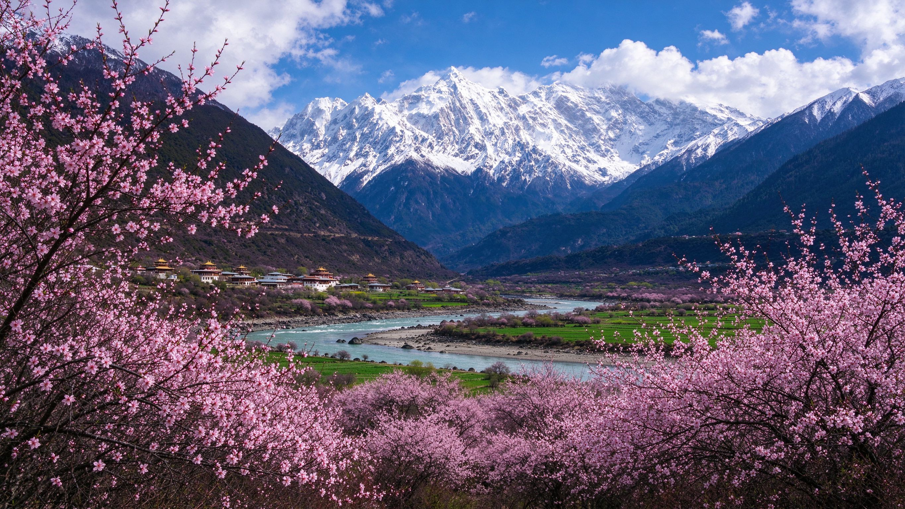
林芝位于西藏东南部、雅鲁藏布江中下游，平均海拔仅 2900–3100 m，气候温润、森林密布，被称作「雪域江南 / 西藏小瑞士」。这里是进藏最温柔的门户，含氧量高、高反轻，许多人把它作为西藏第一站。
林芝的桃花全部为野生高原桃树（光核桃），树高可达十几米、树龄动辄数百年，苍劲枝干上开满密密粉花，与江南低矮的碧桃完全不同。它们不种在庭院，而是漫山遍野、青稞田边、河谷村落、雪山脚下肆意生长。
每年 3 月中旬到 4 月中旬，桃花随海拔由低到高次第开放，粉色花海与南迦巴瓦等圣洁雪山同框，是《中国国家地理》笔下中国最美的春天。林芝桃花节也在此时举办。除了桃花，雅鲁藏布大峡谷、尼洋河、巴松措、鲁朗林海一路相伴。
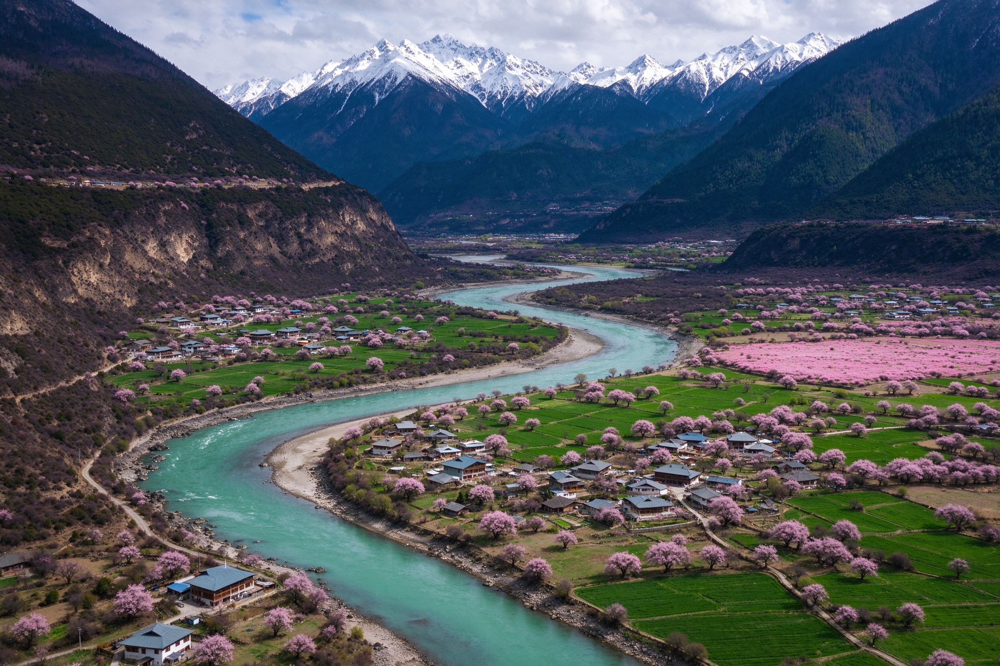
距市区约 15 分钟车程，野生桃林密集、田间水影，适合抵达当天先赏
近 60 公里桃花长廊、20 余万株野桃，平均树龄约 360 岁，雪山相伴
雅鲁藏布大峡谷深处，推窗见雪峰与桃花，住一晚等日照金山
林芝桃花最大的特点是「梯度开放」：海拔越低开得越早，从波密河谷到工布江达高山，花期前后错开近一个月。看懂花期，才知道哪天该站在哪个村。
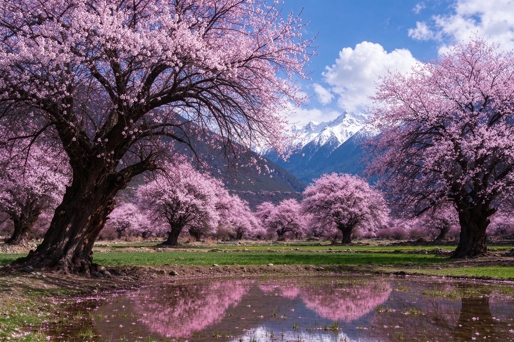
林芝近郊 · 桃花村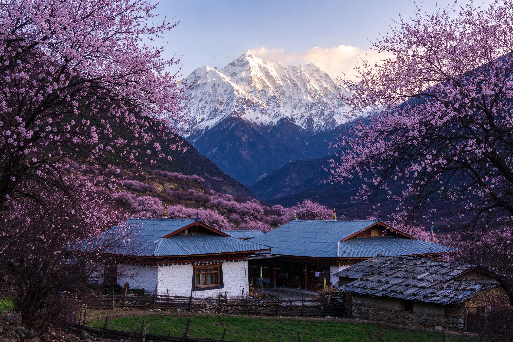
大峡谷 · 索松村（重头戏）海拔仅约 2900 m，当天不洗澡、慢动作适应；下午先到嘎拉桃花村看桃林水影，傍晚尼洋河散步。
经派镇乘观光车进峡谷，过大渡卡、南迦巴瓦观景台、直白村，傍晚入住索松村民宿，在桃花环绕的屋顶等南迦巴瓦日落金山。
清晨补拍南迦巴瓦与桃花，随后经色季拉山口（可远眺雪山）、鲁朗林海小镇，沿帕隆藏布江进入波密，沿途桃花渐密，宿波密。
一整天泡在中国最大桃花谷：如纳村、倾多寺、玉许乡的桃花长廊，雪山、青稞田相伴；可加嘎朗湖、岗云杉林，时间充裕再赴然乌湖、来古冰川。
沿河谷返回，高海拔的工布江达桃花最晚、别有晚樱意味；游巴松措碧蓝圣湖、湖心岛与新措轻徒步，宿景区或返回林芝。
时间充裕可拉林铁路到拉萨，加 1–2 天看布达拉宫、羊卓雍措；否则从林芝带着一路粉色记忆返程。
时间紧怎么压缩：舍弃波密（最远），4 天 3 晚只走「嘎拉村 + 大峡谷索松村 + 巴松措」，也能抓住雪山桃花精华；务必卡在 3 月 25 日 – 4 月 10 日，索松村民宿提前 1 个月订。想加拉萨、羊湖需再加 2 天。
世界最深的峡谷、最害羞的雪山、碧绿的尼洋河、宝石般的圣湖、冰川环抱的然乌、云杉参天的岗乡——八处画面，拼出立体的藏地春天。
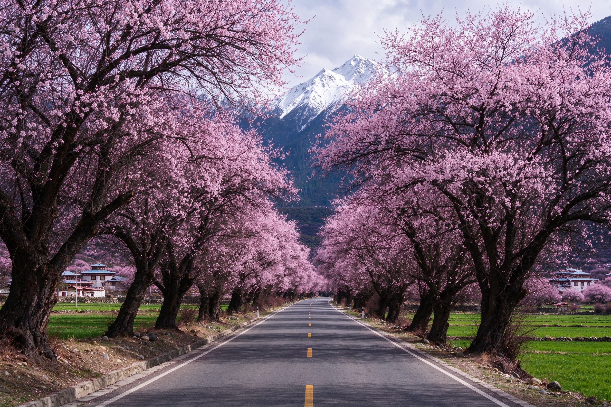
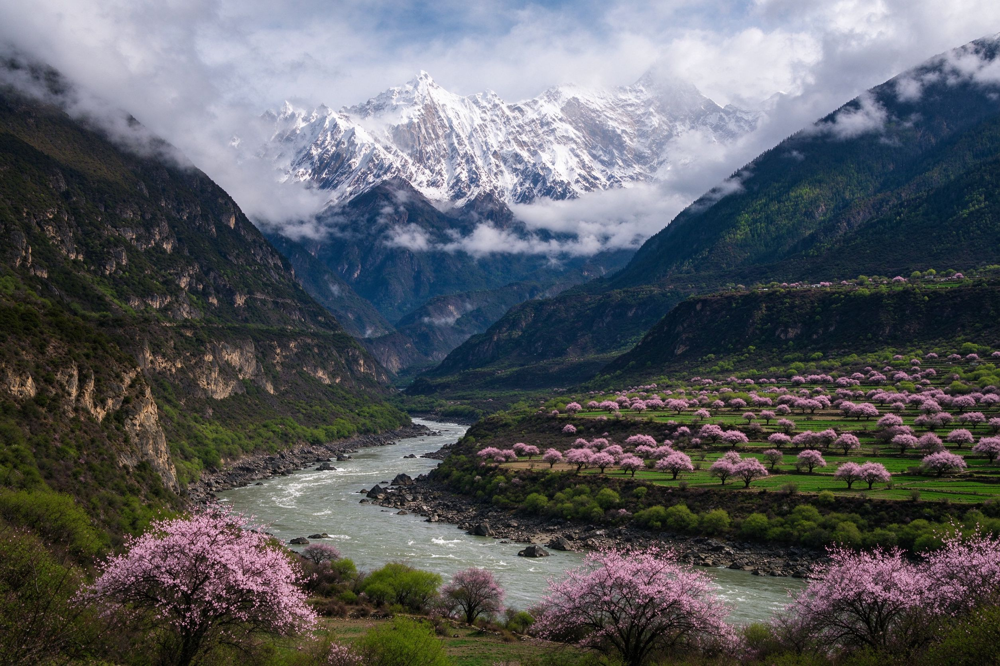
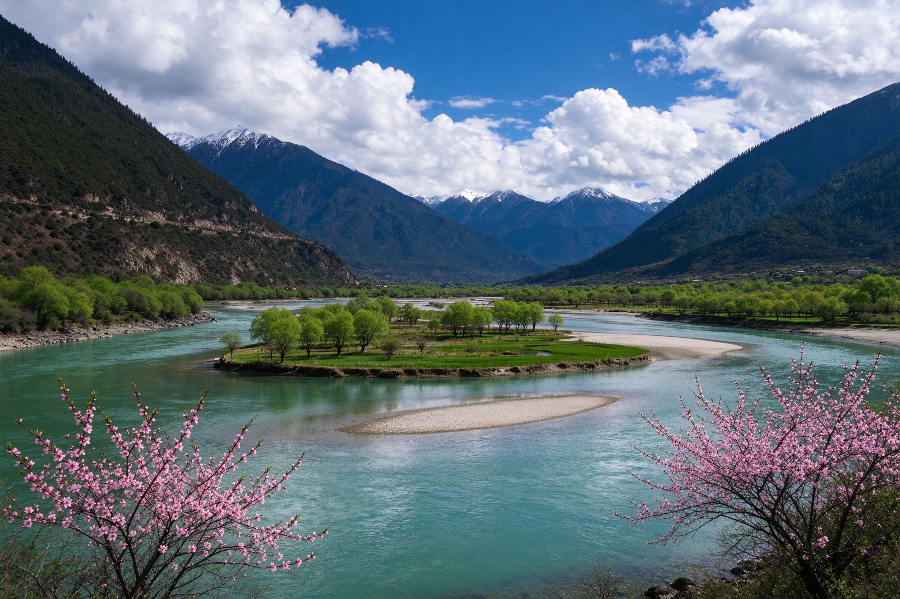
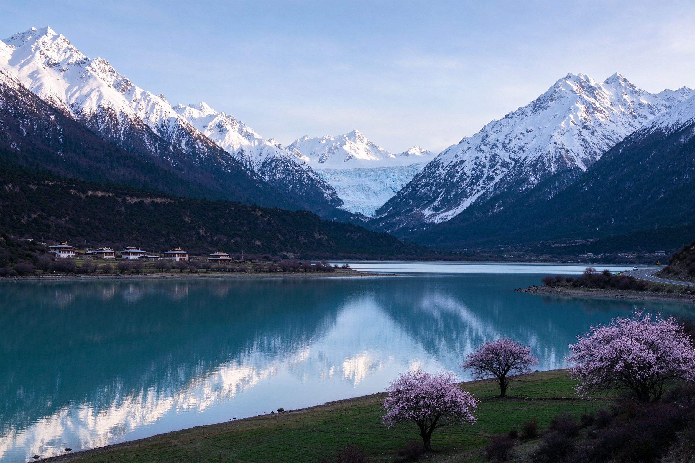
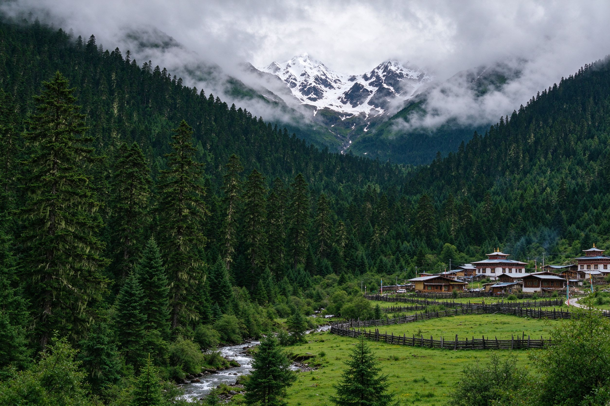
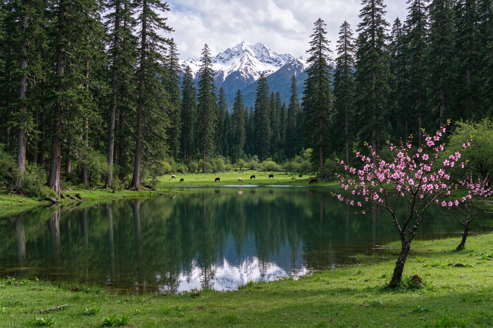
很少有人只为桃花飞一趟高原，最经典的走法是「拉萨进、林芝出」或反向，把桃花和布达拉宫、羊卓雍措串成一条线，一次集齐藏地人文与春色。
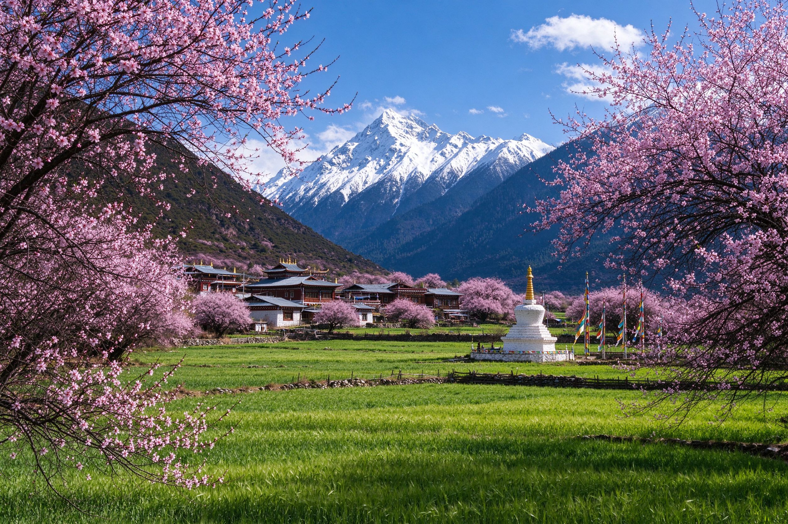
粉色桃花、翠绿青稞田、白塔经幡与藏式村寨，是林芝最具代表性的高原田园画面，沿途随处可停，清晨与傍晚光线最佳。
世界屋脊上的信仰圣殿，大昭寺、八廓街一并游览；建议安排在进藏第一天或桃花线之后，提前预约门票，留 1–2 天慢逛。
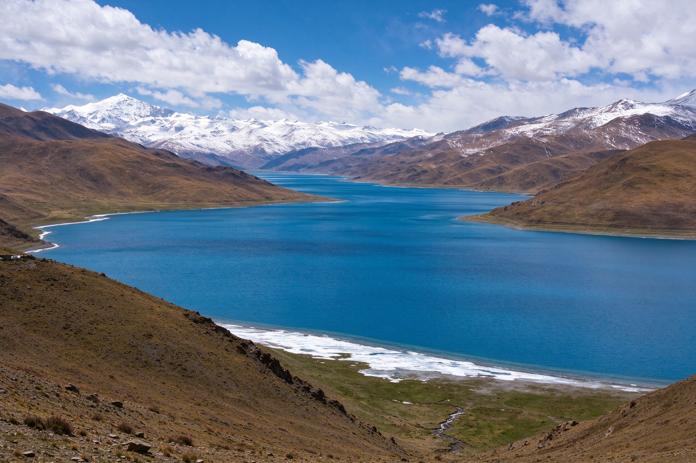
西藏三大圣湖之一，碧蓝湖水如丝带缠绕群山，4 月湖畔仍有残冰；常与卡若拉冰川同游，在拉萨至日喀则方向。
经典桃花环线参考（8–9 天）：拉萨（布达拉宫 / 大昭寺）→ 羊卓雍措 → 林芝嘎拉村 → 雅鲁藏布大峡谷 / 索松村 → 波密桃花沟 / 然乌湖 → 巴松措 → 拉萨返程。把住宿按「3 月底至 4 月初在索松、波密」倒排即可。
夏天避暑看绿、秋天彩林晴日、冬天雪山清寂，各有受众；但只有春天，桃花与雪山同框的画面是别处无法复制的。先看四季，再看 12 个月曲线。
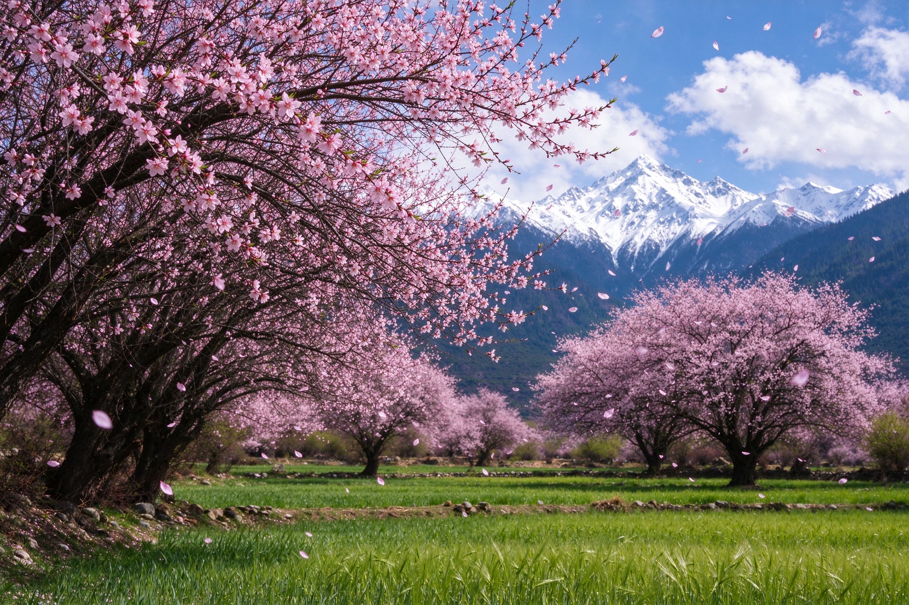
春 · 桃花雪山 3 月中旬 — 4 月中旬桃花随海拔梯度开放，粉色花海与南迦巴瓦同框，白天气温约 10–18℃，桃花节举办，是林芝毫无争议的黄金季。
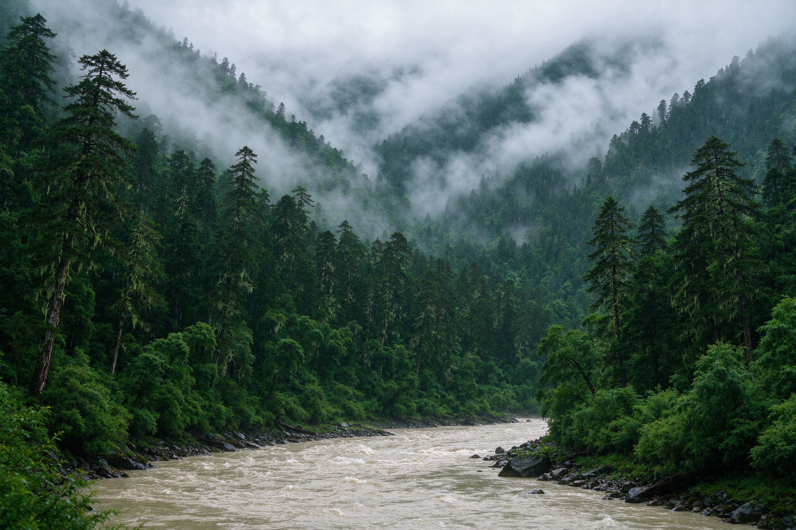
夏 · 浓绿避暑 6 月 — 8 月林海翠绿、均温 15–25℃ 是避暑天堂，但进入雨季、云雾多雨，南迦巴瓦常被云遮，没有桃花，部分路段易塌方。
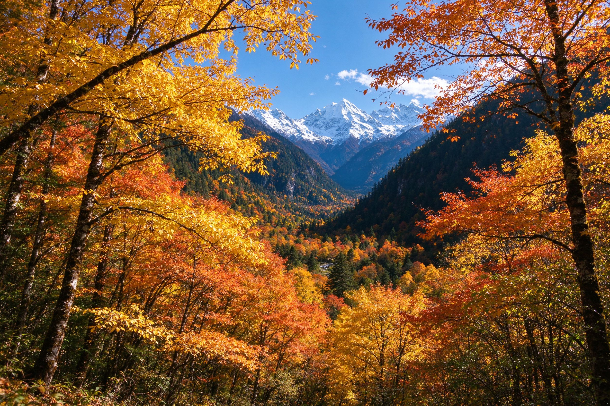
秋 · 彩林晴日 9 月 — 10 月雨季结束、晴天通透，鲁朗与峡谷彩林金黄橙红，南迦巴瓦可见率高，是仅次于春天的好季节，但没有桃花。
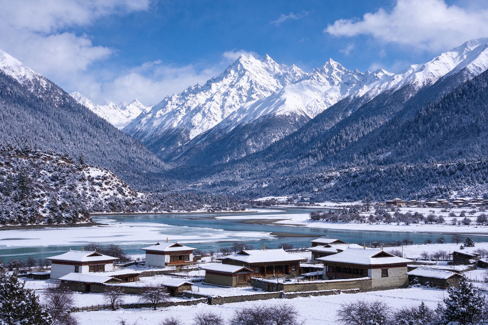
冬 · 雪山清寂 11 月 — 次年 2 月雪山圣洁、天地清寂，游客稀少，常有「冬游西藏」免票优惠；但气温低、含氧量低、部分设施与班车减少。
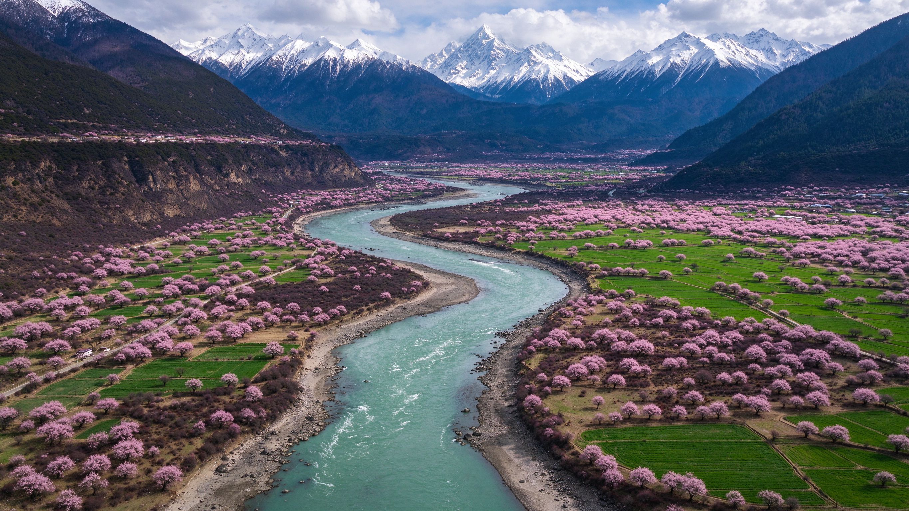
林芝桃花整体花期约 3 月中旬至 4 月中旬，海拔越低开得越早；若想同时拍到桃花、雪山与通透蓝天，3 月底至 4 月初最为稳妥，具体随当年气温前后浮动。